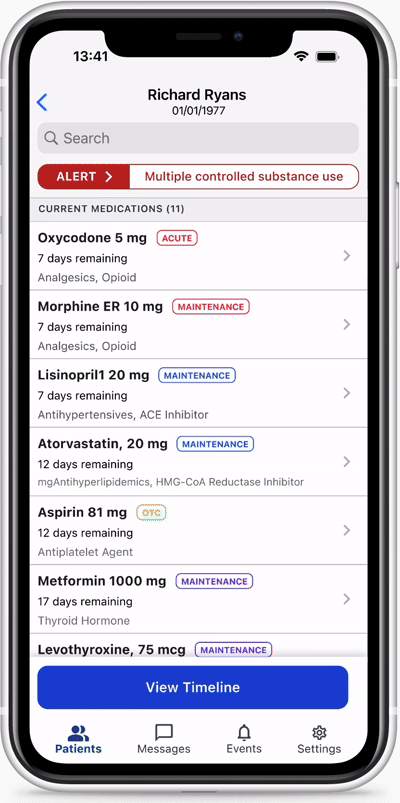
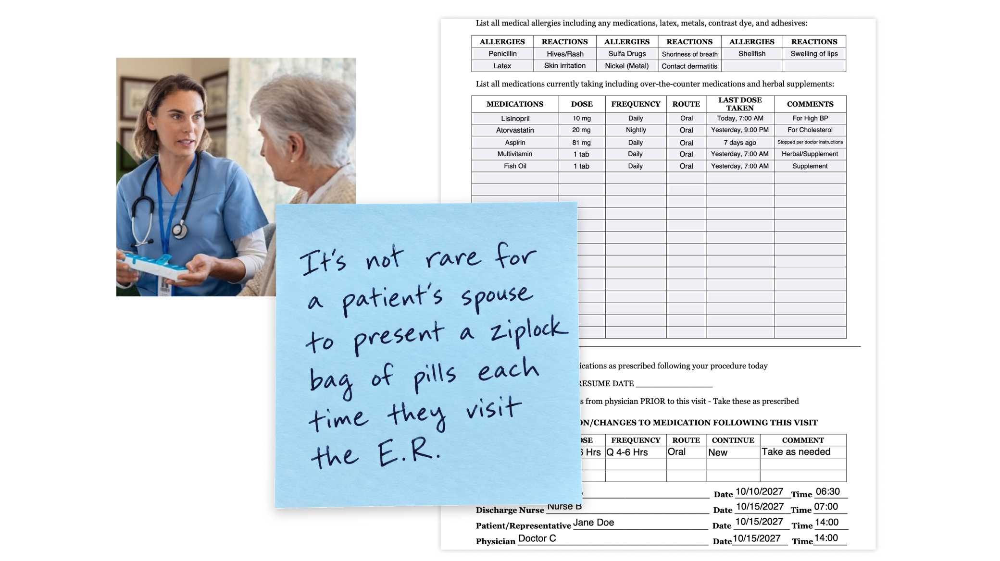
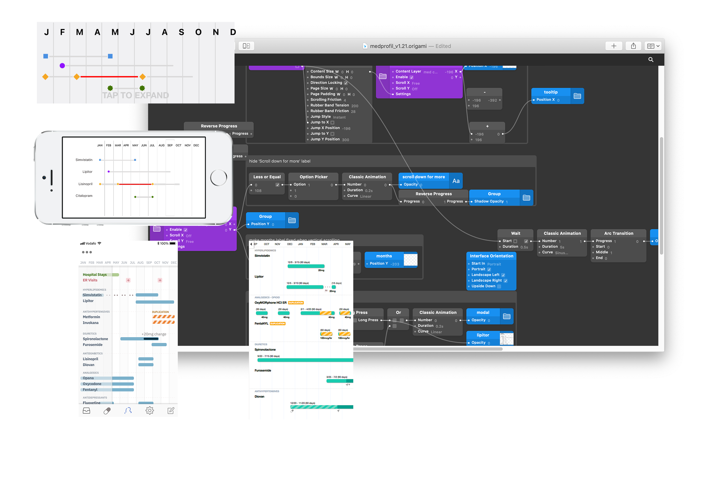
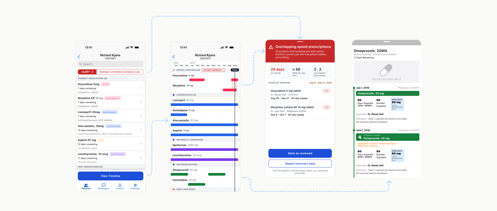

Cureatr / Case study
From scattered medication records to a tool used across 20+ hospital systems

01 / Summary
Lead UX Designer · 2016–2019
I owned the timeline interaction and alert design, working with a UX researcher, a product manager with nurse-practitioner expertise, and a mobile developer.
02 / Problem
Clinicians had to assemble a patient’s medication history from prescription records, printouts, and the patient’s memory. Before they could make a decision, they had to piece the evidence together.

03 / What we learned
The researcher and I took a working prototype to hospital staff around New York. Clinicians took readily to horizontal scrolling, and most of the staff we met used iOS.
04 / Key decision
Organize medication history as a horizontal timeline so clinicians can read prescriptions, gaps, and overlapping use in time. I learned Origami to test the interaction with a prototype that behaved like the intended product.
For overlapping controlled-substance prescriptions, use a full-screen alert with prescriber, pharmacy, and date range. This was information that needed to interrupt the workflow, rather than sit in a quiet badge.
Making the timeline tangible

05 / Design
Designing for the failure case

06 / Outcome
Deployed across 20+ hospital systems. Mather Hospital credited the product with helping staff see medications and pharmacy sources without calling pharmacies, saving time and helping avoid errors.
AssureCare later acquired technology from Cureatr and SinfoniaRx. Read the announcement ↗
07 / Reflection
The alert tested well alone, but competed with alerts clinicians already saw throughout the day. I stripped it back to what needed to interrupt. In a clinical workflow, visual emphasis has to earn the attention it takes.